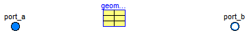

| Name | Description |
|---|---|
| Thicked edged orifice flow model |

This component models a thick edged orifice with sharp corners in the overall flow regime for incompressible and single-phase fluid flow through an arbitrary shaped cross sectional area (square, circular, etc.) considering influence of surface roughness. It is expected that also compressible fluid flow can be handled up to about Ma = 0.3. It is assumed that neither mass nor energy is stored in this component. In the model basically a function is called to compute the mass flow rate as a function of pressure loss for a thick edged orifice. Also the inverse of this function is defined, and a tool might use this inverse function instead, in order to avoid the solution of a nonlinear equation.
The details of the model are described in the documentation of the underlying function.
Extends from Modelica.Fluid.Dissipation.Utilities.Icons.PressureLoss.Orifice_i (Icon for orifice), Modelica.Fluid.Interfaces.PartialPressureLoss (Base flow model for pressure loss functions with the same area at port_a and at port_b).
| Type | Name | Default | Description |
|---|---|---|---|
| replaceable package Medium | PartialMedium | Medium in the component | |
| Geometry | geometry | Geometry of thick edged orifice | |
| Assumptions | |||
| Boolean | allowFlowReversal | system.allowFlowReversal | = true to allow flow reversal, false restricts to design direction (port_a -> port_b) |
| Advanced | |||
| AbsolutePressure | dp_start | 0.01*system.p_start | Guess value of dp = port_a.p - port_b.p [Pa] |
| MassFlowRate | m_flow_start | system.m_flow_start | Guess value of m_flow = port_a.m_flow [kg/s] |
| MassFlowRate | m_flow_small | system.m_flow_small | Small mass flow rate for regularization of zero flow [kg/s] |
| Diagnostics | |||
| Boolean | show_T | true | = true, if temperatures at port_a and port_b are computed |
| Boolean | show_V_flow | true | = true, if volume flow rate at inflowing port is computed |
| Type | Name | Description |
|---|---|---|
| FluidPort_a | port_a | Fluid connector a (positive design flow direction is from port_a to port_b) |
| FluidPort_b | port_b | Fluid connector b (positive design flow direction is from port_a to port_b) |
model ThickEdgedOrifice "Thicked edged orifice flow model" extends Modelica.Fluid.Dissipation.Utilities.Icons.PressureLoss.Orifice_i; extends Modelica.Fluid.Interfaces.PartialPressureLoss;parameter Modelica.Fluid.Fittings.BaseClasses.Orifices.ThickEdgedOrifice.Geometry geometry "Geometry of thick edged orifice"; protected parameter Medium.AbsolutePressure dp_small= Modelica.Fluid.Dissipation.PressureLoss.Orifice.dp_thickEdgedOverall_DP( Modelica.Fluid.Dissipation.PressureLoss.Orifice.dp_thickEdgedOverall_IN_con( A_0=geometry.venaCrossArea, A_1=geometry.crossArea, C_0=geometry.venaPerimeter, C_1=geometry.perimeter, L=geometry.venaLength, dp_smooth=1e-10), Modelica.Fluid.Dissipation.PressureLoss.Orifice.dp_thickEdgedOverall_IN_var( rho=Medium.density(state_dp_small), eta=Medium.dynamicViscosity(state_dp_small)), m_flow_small) "Default small pressure drop for regularization of laminar and zero flow (calculated from m_flow_small)"; equation if allowFlowReversal then m_flow = Modelica.Fluid.Fittings.BaseClasses.Orifices.ThickEdgedOrifice.massFlowRate( dp, geometry, d_a, d_b, eta_a, eta_b, dp_small, m_flow_small); else m_flow = Modelica.Fluid.Dissipation.PressureLoss.Orifice.dp_thickEdgedOverall_MFLOW( Modelica.Fluid.Dissipation.PressureLoss.Orifice.dp_thickEdgedOverall_IN_con( A_0=geometry.venaCrossArea, A_1=geometry.crossArea, C_0=geometry.venaPerimeter, C_1=geometry.perimeter, L=geometry.venaLength, dp_smooth=dp_small), Modelica.Fluid.Dissipation.PressureLoss.Orifice.dp_thickEdgedOverall_IN_var(rho=d_a, eta=eta_a), dp); end if;end ThickEdgedOrifice;